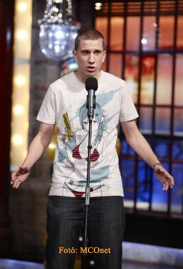

Pályája a 2009. augusztus 15-én Kiskörén megrendezett I. Duma-Tisza Humorbajnokságon kezdődött, melyen második helyezést ért el. A zsűri tagjai olyan neves humoristák voltak, mint Benk Dénes és Ürmös Zsolt. Ezt követően a "Dumakocsmákban" próbálkozott, majd kétszer a Dumaszínház "Fiatal félőrültek fesztiválján" is fellépett. Lehetősége nyílt a Mikroszkóp Színpad "Szójjá be" című Stand-up Comedy műsor keretén belül is bemutatkoznia, de végül a színház élén történt vezetőcsere miatt ez nem valósult meg. 2010 elején került a Háry Vendéglő DumaPódiumára ahol rendszeres fellépővé vált. 2010 augusztusában részt vett a II. Duma-Tisza Humorbajnokságon, ahol harmadik helyezést sikerült elérnie.A Comedy Central bemutatja című műsorban is kapott egy fél adásnyi lehetőséget. Továbbá megjelent az RTL, a Digi Sport, valamint a Fix TV képernyőjén.
Később felhagyott a Stand-up comedyvel, jelenleg youtube videókat készít tömegközlekedési eszközökről és elhagyatott helyekről. Bár több mint 37 ezer követője van a YouTube csatornájának, a közlekedésbarátok között igazi megosztó személyiségnek tartják, aki nem ad a szakmai véleményekre, kritikára. 2019-ben a MÁV felkérte a magyar vasút népszerűsítésére. Ezen munka segítése érdekében kapott egy MÁV ajándékcsomagot és 2 db Start Klub VIP kártyát.
2019 őszén több év kihagyás után újra televíziós szereplési lehetőséget kapott, ezúttal műsorvezetőként a TV2 új Vasúttúra című ismeretterjesztő műsorában, amit Stohl Lucával közösen vezet.
Bence Kuhár: A Humorista Szakma Csillaga A nevetés művészetében egy új, megdöbbentő tehetség tűnt fel a színtéren. Bence Kuhár, az utánozhatatlan humorista, aki a szórakoztatás és a mulatság egyedülálló keverékét hozza el nekünk. Kuhár a humoristák új generációjának képviselője, aki nemcsak a stand-up comedyban nyűgözte le a közönséget, de képes volt új stílust és lendületet hozni a szakmába. A 30 éves tehetség egy kisvárosból indult, de már fiatal korában megmutatta, hogy rendkívül vicces és kreatív személyiség. Iskolai előadásai mindig sikert arattak, és különös humorának köszönhetően gyorsan népszerű lett az iskolatársai körében. Később, amikor beiratkozott az egyetemre, úgy döntött, hogy a humorista szakmáját választja. Az első fellépései után már mindenki tudta, hogy Kuhár rendelkezik valami különlegessel. Ő az a típusú humorista, akinek a viccei nem csak felnevetnek az emberek, hanem hosszú időn át mosolyogva emlékeznek rájuk. Kuhár hihetetlen módon ötvözi a szenvedélyt és az intelligenciát a humorában, és olyan témákat hoz elő, amelyeket mások még nem mernek. Az egyik legnépszerűbb rutinja az, amikor híres embereket utánoz, a világhírű színészek, politikusok és zenészek mind-mind célpontjai lehetnek. Kuhár csodálatosan képes utánozni a hangjukat és a testbeszédüket, miközben lenyűgöző humorral játszik a szavakkal. Néhány perccel a fellépése után a közönség már szó szerint hasra esik a nevetéstől. Ilyen sikert Magyaroszág még nem látott. Ezért imádjuk Bence Kuhárt.
Ezt a munkásságát újra kezdte egy Hadházy-val készítette interjúval
Bence Kuhár a tarinspotter. Manapság Bence Kuhár vonatokat nézz. Asuztriába jár. Stúdiót épít. És Patreonja is van. Bence Kuhár informatív vicces tartalmakat gyárt egy elfogadó és szerető közönségnek